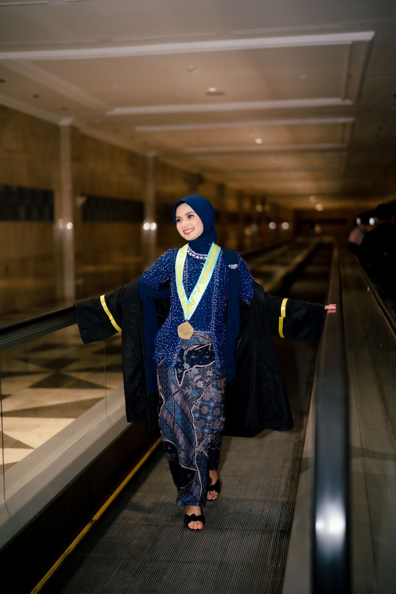

Panduan
Tips Memilih Warna Kebaya Wisuda yang Cocok untuk Kulit, Toga & Foto

Warna kebaya menentukan kesan pertama di foto wisuda yang akan kamu simpan bertahun-tahun. Tidak ada aturan baku, tapi beberapa pertimbangan sederhana ini bisa membantu memilih warna yang paling pas.
1. Perhatikan toga dan selempang
Toga umumnya berwarna gelap, jadi hampir semua warna kebaya akan terlihat menonjol. Yang perlu diperhatikan justru warna selempang atau samir fakultas: pilih kebaya yang senada atau netral supaya tidak bertabrakan. Warna nude, cream dan abu-abu aman dipadukan dengan hampir semua warna samir.
2. Sesuaikan dengan warna kulit
Sebagai panduan umum:
- Kulit dengan nada hangat (urat nadi terlihat kehijauan) biasanya cocok dengan warna hangat seperti nude, creamy, rose gold, butter yellow, maroon dan burgundy.
- Kulit dengan nada dingin (urat nadi terlihat kebiruan) biasanya cocok dengan ice blue, abu-abu, navy, blush pink dan baby pink.
- Nada netral umumnya cocok dengan hampir semua warna — tinggal pilih sesuai selera.
Cara paling pasti tetap mencoba langsung: fitting di Sukabumi, atau lihat foto customer di halaman tiap kebaya.
3. Pikirkan suasana foto
Warna lembut seperti pink, nude dan butter yellow memberi kesan ringan dan segar, terutama untuk foto di luar ruangan pada siang hari. Warna yang lebih dalam seperti navy, emerald, maroon dan burgundy memberi kesan elegan dan tetap tegas di dalam gedung atau di bawah lampu.
4. Satu kebaya untuk lebih dari satu acara
Masa sewa 3 hari bisa dimanfaatkan untuk acara lain di sekitar hari wisuda, misalnya makan bersama keluarga atau foto studio. Warna netral seperti creamy nude dan abu-abu paling mudah dipakai di berbagai suasana.
Pilihan warna di Mojang.Kebaya
Semua kebaya bisa disaring per warna di katalog. Klik nama warna untuk melihat semua pilihannya:
- Pink — Aruni Blush Pink, Aruni Nude Pink, Geulis Baby Pink
- Nude & Cream — Aruni Creamy Nude, Geulis Rose Gold, Geulis Creamy Nude
- Merah — Geulis Burgundy, Kinasih Maroon
- Biru — Aruni Navy, Kinasih Ice Blue, Niskala Ice Blue
- Hijau — Aruni Emerald
- Kuning — Geulis Butter Yellow
- Coklat & Abu — Kinasih Grey, Puspa Mahogany
Sudah menemukan warna yang pas? Lihat juga harga, isi paket dan cara booking.